25 Afsluiten op
Burning Man
Naar de woestijn,
Afzien en vertier,
San Francisco.
Tijdens mijn reis in Zuid Amerika werd ik er regelmatig op aangesproken dat ik zo veel leek op die bekende acteur van de Vampierenfilms, Woody Harrelson. Ik had werkelijk geen idee wie die acteur was. Ik was nog in Mexico Stad en een droom kwam in vervulling toen ik een kaartje wist te bemachtigen voor het Burning Festival in de woestijn van Nevada, de Black Rock Desert. Ik wilde deelnemen aan een van de vele kampen die bestaan op Burning Man plaatste een berichtje op facebook met als grapje of mensen ook vonden dat ik op Woody Harrelson leek, waar heel veel reacties op kwamen, waaronder van kamp El Station.
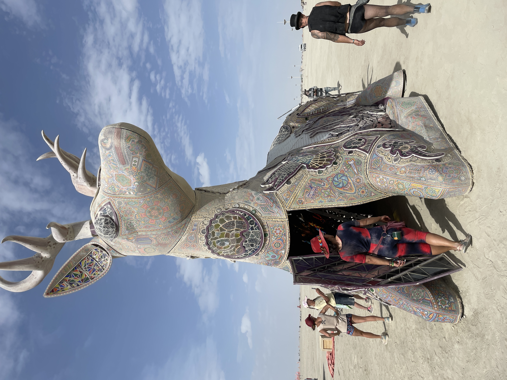En zo begon een traject aan voorbereidingen zoals ik dat nog nooit voor een festival had gezien. In juni vond ik het kamp, een groep van 75 Burning man gangers en wekelijks was er een meeting over hoe je je kunt voorbereiden op zandstormen, droogte en ook hele technische zaken zoals stroomvoorziening. Je leerde zo al de mensen wat beter kennen en omdat ik zelf echt even een poosje het computeren wilde loslaten bood ik aan om zelfs eerder al naar het festivalterrein te komen om te helpen met opbouwen. Als je bijna 2 weken in de woestijn gaat leven, en je al je eten en drinken zelf mee moet nemen, en geen auto hebt, dan wordt dit natuurlijk een hele uitdaging. Gelukkig tipte een Nederlander Ernst-Jan uit het kamp mij op organisatie Playapad. Zij verhuren een pakket met alle kampeerspullen die maar nodig zijn, inclusief een echte Amerikaanse 'beachcruiser' fiets omdat de Black Rock City zo groot is. Te voet is dat bijna niet te doen. Deze organisatie Playapad, is gevestigd in Reno, inlands, de laatste stad op 3 uur afstand van de Black Rock Desert, de plek van het Burning Man festival. Daar in Reno moest ik dus zien te komen en alle kampeerspullen en boodschappen verzamelen. Ik zei gedag tegen Jim en Suzan, het echtpaar op leeftijd bij wie ik in Ventura, bij Los Angeles in de buurt, mocht verblijven en begon aan de reis naar Reno. Het hele plan liep al snel in de soep omdat gedurende de Flixbus-reis al snel duidelijk werd dat een overstap niet gehaald ging worden en dus de meerderheid van de mensen in de bus 12 uur moest wachten op het busstation van Sacramento. Ik baalde flink én er was nog een ander probleem wat mij misschien nog wel meer zorgen baarde: Hoe ga ik straks als ik in Reno ben met mijn hele hebben en houwen (alle dozen kampeerspullen, fiets en 70 liter water) naar Burning Man kunnen reizen? De Burner-bus was uitverkocht en ook vanuit mijn kamp kwam er helaas geen respons van iemand die toevallig ook die dag dat laatste stuk zou afleggen.
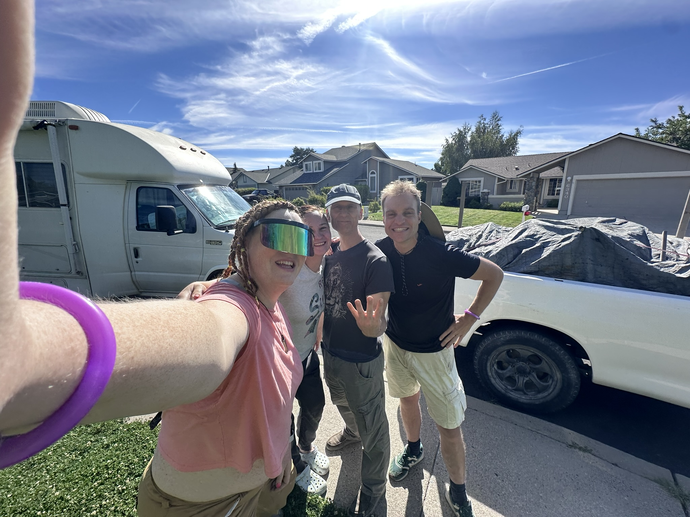Plotseling kwam daar via Facebook dan toch een verlossend bericht. Ene Masha berichtte mij dat ik met haar mee kon rijden samen met Calamity en nog een andere jongen. Toen ik dus groen licht had, ben ik diezelfde dag nog twee keer naar supermarkt Walmart gegaan om mijn hele boodschappenlijst af te werken, bij Playapad langs geweest om de kampeerspullen op te halen en bij de airbnb jerrycans gaan vullen met water. Het paste allemaal maar net, maar gelukkig om 5 uur 's middags had ik alles klaar en werd ik opgehaald met een grote truck. Met mensen die ik helemaal niet kende en die ook niet van mijn kamp waren reden we naar hun huis in Reno. De twee meiden waren kamp organisatoren van een ander kamp. We konden in hun huis in Reno overnachten en de volgende dag vroeg richting Burning Man vertrekken. Tot dat moment had ik me zo gespannen gevoeld om alles wat geregeld moest worden, maar nu alle spullen en zelfs ook het vervoer geregeld waren, kon ik de zorgen voor het eerst wat loslaten en genieten van een ouderwets koud biertje. Want is dit niet fenomenaal? Dat mensen die jou helemaal niet kennen je in hun huis nemen en zelfs ook naar Burning Man brengen? En bovendien dat je je zo spontaan met mensen kunt verbinden, terwijl iedereen een heel ander verhaal heeft, en toch samen de weg erheen mag beleven.
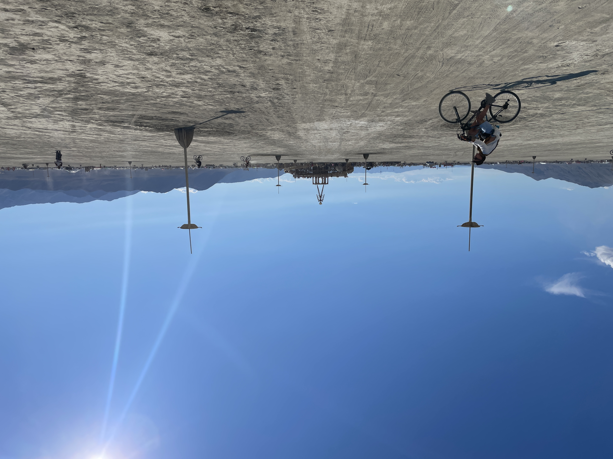 Burning Man is ooit begonnen in Los Angeles in de jaren 80, toen een groep hippies besloot een houten man op het strand van Baker beach te verbranden. Sinds 1990 verhuisde het naar de woestijn en is het uitgegroeid tot de immense stad die het vandaag de dag is midden in de woestijn. Bij aankomst worden we begroet door "de greeters" en traditiegetrouw moeten nieuwe burners een zand engel maken door in het zand te liggen en armen en benen te bewegen. Ik zie de stad in opbouw en auto's met enorme wolken zand. Al in de rij zien we uitzinnige mensen dansen op het dak. Een gespierde man naakt dansend boven op zijn auto met een hoorn waaruit hij drinkt. De mensen zijn zo ontzettend vriendelijk. Ik moet even wennen, want het is hier blijkbaar heel gebruikelijk om een wildvreemde een knuffel te geven. "Welkom thuis!", wordt er groepen. Daar waar alles lijkt te kunnen, merk ik dat er toch een ding is wat mensen hier niet heel erg op prijs stellen. En dat is wanneer je zegt dat Burning Man een festival is.
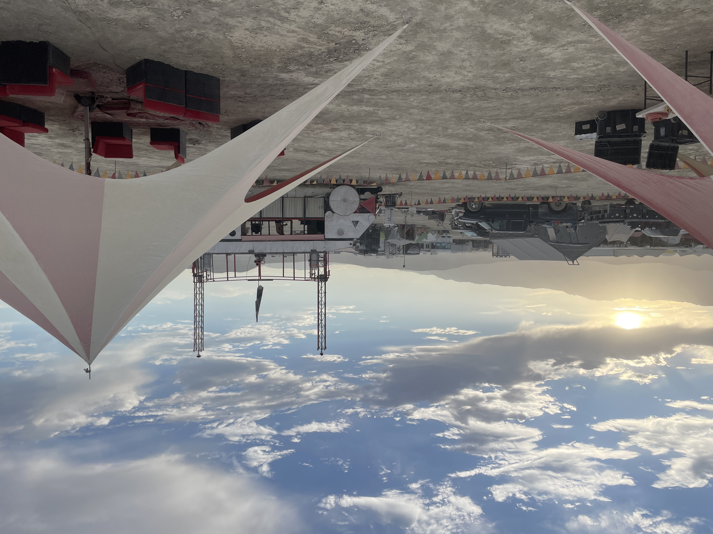Ik word afgezet bij ons kamp. Er zijn nog maar een paar tenten en Rv's. Rv’s zijn grote campers, meters lang, waarin je zo’n beetje alle gemak hebt wat je normaal ook in je huis hebt. Het is zo gezellig met het kleine clubje mensen met wie we er al zijn. De eigenaar Kaweh, en ook een vader Jessy met zijn twee kinderen Eden en Lio. Ik ben blij dat ik eerder ben gekomen want zo pik natuurlijk al wat op van hoe het kamp werkt, de elektriciteit, de keuken, en we hebben zelfs een art car, een soort carnavalswagen met verlichting voor als de avond valt. Nu de groep nog klein is leer ik alvast de mensen kennen en dat is als je voor de eerste keer op Burning Man komt erg prettig. Men zegt dat het vanaf zondag pas echt druk gaat worden, maar zelf kijk ik nu al mijn ogen uit naar de omvang. Het is allemaal zo goed georganiseerd. Iedere dag zijn er feestjes van een bouwkamp, mensen zijn er aan het basketballen, vuurspuwen, en je neemt je beker mee die je daar kan laten bijvullen. We feesten in een fietsenmaker en plotseling komt de fanfare binnen. Alles is gratis, er bestaat geen geld. Je neemt mee wat je kan en alles wordt gedeeld. Kon de hele wereld maar zo met elkaar omgaan.
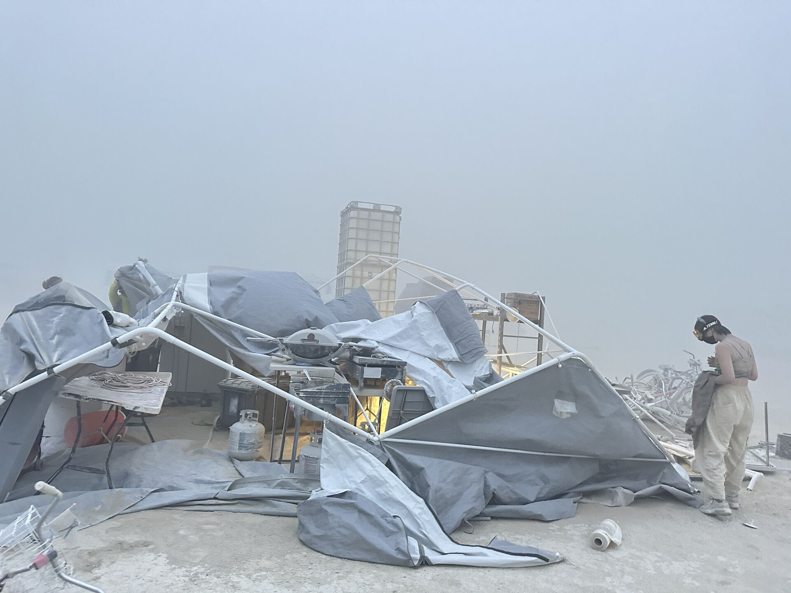We naderen het einde van de opbouw, we hebben hard gewerkt en natuurlijk ook een feestje meegepakt. Ik loop naar onze keukentent waar de kinderen Eden en Lio zijn en ook een moeder en dochter uit China die dumplings gaan maken, wanneer plotseling een enorme stofwolk opkomt en we in een gigantische zandstorm belanden. Iedereen haast zich naar de hoeken van de tent en probeert met man en macht te voorkomen dat de tent wegwaait, maar na een paar minuten wordt al duidelijk dat die tent helemaal niet zo belangrijk is. Deze zandstorm is zo krachtig, dat we niet vrezen voor onze keukentent, maar vooral voor onze eigen levens. Eden heeft geen mondmasker en ik geef hem het mijne en waarschuw de jongens dat we ons achter de koelkasten moeten schuilhouden. De wind blijft maar toenemen en het hele frame begint af te breken en het dak waait alle kanten op. De Chinese moeder en dochter aan de andere kant van onze tent zijn niet meer te zien. Zelfs 2 meter voor je heb je al geen idee meer wat er is door al het opstuivende zand. Eden kruipt heldhaftig over de vloer, haalt de Chinese dames op en we schuilen met zijn 5en maar liefst 2 uur lang dicht tegen de koelkasten aan. Het is een krankzinnige ervaring, het is mijn eerste Burning Man, maar ik heb al heel snel door dat wat wij hier meemaken niet normaal is, zelfs niet op Burning Man. Na 2 uur is het nog niet over maar gelukkig komt onze kamp lead, die ons begeleidt naar hun RV. We zitten onder een laag van een paar cm zand. Maar nu opnieuw overheerst het gevoel van saamhorigheid. We zitten met 16 mensen in een RV, met drankjes en hapjes en muziek en praten na over deze bizarre gebeurtenis.
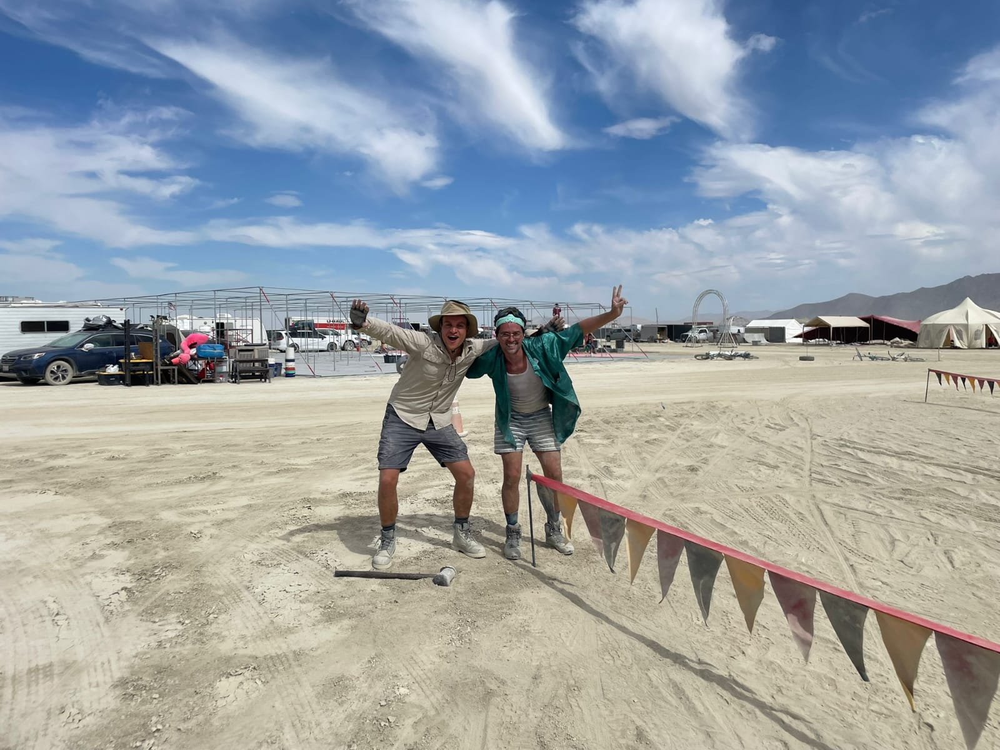Het hele evenement heeft moeite om van deze storm te herstellen, veel tenten zijn beschadigd geraakt, zelfs de beroemde orgie dome wat blijkbaar een begrip is op Burning Man, moet dit jaar de deuren sluiten. Stormen brengen ook nog eens veel regen met zich mee waardoor al het zand aan elkaar plakt en het terrein verandert in een grote modderpoel. Net nu enorme hordes mensen Burning Man willen binnenkomen wordt de ingang geblokkeerd en staan bezoekers zomaar 24 uur te wachten tot ze eindelijk naar binnen mogen. Het is een enorme dreun. Feestjes bezoeken gaat amper want je schoenen komen vast te zitten in de modder. De opluchting is groot wanneer we via Burning Man radio horen dat er de komende dagen beter weer aan zit te komen. Eindelijk kan het evenement dan echt van start, al zullen de mensen die hierbij waren dit nooit vergeten, en zelfs een vriendin van mijn moeder Conny uit Nederland vertelt me dat ze op het nieuws hoorde over een enorme storm op Burning Man.
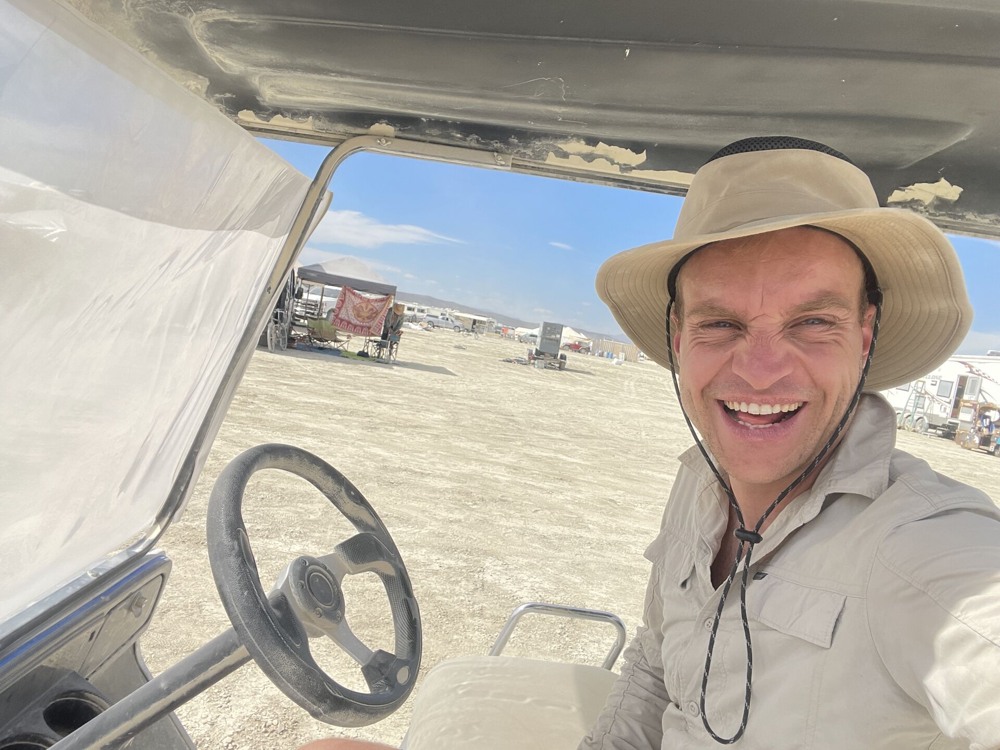Ons kamp stroomt vol en het is soms zelfs een beetje overweldigend om zo veel mensen te ontmoeten, maar alles moet natuurlijk even landen en iedereen heeft tijd nodig om zijn plekje te vinden in het kamp. Er komen 4 mensen uit Bordeaux van mijn leeftijd: Etienne, Antoine, Rada en Dennis. We hebben eigenlijk meteen een hele goede klik en iedere avond rond 9 uur groeperen we ons en gaan we op avontuur over de "playa" ofwel het strand, het centrum van Burning Man waar in iedere straat wel feestjes aan de gang zijn. Sommige feestjes op vaste podia, maar soms rijden er enorme omgebouwde trucks voorbij met muziek en licht, waar je op kan staan en dansen, en vaak ook in kan klimmen. Vooral Etienne en Antoine zijn echte feestgangers. Er is zo'n goede klik dat we eigenlijk zonder al te veel woorden uit te wisselen wel weten dat we van elkaar op aan kunnen. Als het zo gezellig is dan kan het ook zomaar licht worden terwijl je nog op het feestje staat. Om 7 uur 's ochtends als de zon op komt, worden de mensen diep in de playa er alleen maar meer, omdat ook mensen die net wakker worden erheen komen. Het is zo uniek omdat iedereen in hetzelfde schuitje zit, een week lang daar met amper wifi, dat je je echt verbonden voelt met elkaar. Niemand moet naar werk, of krijgt een belangrijk berichtje. Iedereen zit met zijn hoofd helemaal bij het feest en dat is vandaag met alle elektronica toch wel erg bijzonder.
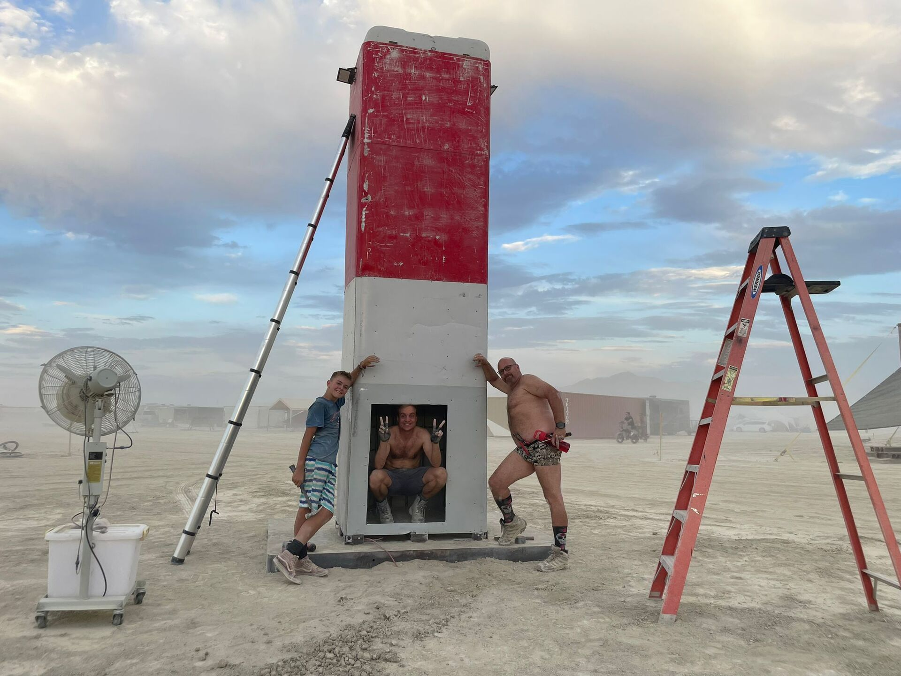Het is niet alleen maar feest, want er zijn op het kamp ook taken. Als zijnde "El Station" bieden we voorbijgangers een opfris station. We hebben een nagemaakte benzinepomp waar mensen verfrissend waterdamp gespoten krijgen met luchtdouche en water met electrolytes. Ook wordt vanaf de art car "Hels dinner" potstickers gesereveerd, een soort dumplings waarvoor mensen tot aan de straat in de rij staan. In de ochtenden slaap je uit, je kletst meestal met een groepje en daarna ga je je klaarmaken voor de dag. Naar het toilet lopen, want plassen op de playa is een no go. Water vullen, zand uit je tent halen en je tas met camelbak organiseren. Zonnebrand, water, licht.
 Na een aantal geweldige dagen besluit ik ook zelf op avontuur te gaan. Ik dans een avondje salsa wat toch een fantastische hobby is. Waar ook ter wereld kun je een beroep doen op deze geweldige dans. En de dag erna trek ik de stoute schoenen aan en met een volle tas met biertjes en water ben ik klaar om Black Rock City te voet te gaan verkennen. Ik bezoek een IJshotel en ook een bar met alleen maar pittige drankjes. Waar je ook als je daar behoefte aan hebt in een klein biechthokje bij iemand iets kan opbiechten. Het markeert voor mij waar Burning Man voor staat. Er zijn mensen hier in Amerika die niet aan hun baas vertellen dat ze naar Burning Man zijn geweest vanwege het slechte imago die het festival heeft, dat het alleen maar draait om sex en drugs, maar de aandacht die er is voor gevoel en om mensen iets te schenken maakt deze plek zo veel meer dan dat. Nu ik over de playa loop en de prachtige kunstwerken aanschouw waar mensen maanden aan gewerkt hebben, loop ik richting de tempel van Burning Man. Vooraf had ik al vernomen, dat hier in de tempel een andere sfeer heerst. Hier is het even geen feest maar mogen mensen rouwen en is er ruimte voor bezinning en verdriet van verlies. We zitten met honderden mensen in een cirkel op tribunes met wierook in het midden. Er wordt geen woord gesproken en toch voel je je verbonden met iedereen. Ook mij raakt het want ja, de afgelopen 3 jaar zijn een behoorlijke uitdaging geweest en om daar eens even op te reflecteren is heel fijn. Het is tijd om verder te gaan. Net op het moment dat ik de tempel uitkom zie ik helemaal achterin in de playa een menigte. Bij toeval stuit ik daar op een enorm openlucht orkest wat op het punt staat te beginnen. Ik maak een praatje met een vrouw van rond de 50. Het orkest speelt onder andere Nothing Else Matters en Bohemian Rhapsody terwijl de zon steeds een beetje verder onder gaat. Het is het zoveelste hoogtepunt uit een week waarin je lijkt te leven op een roze wolk.
Na een aantal geweldige dagen besluit ik ook zelf op avontuur te gaan. Ik dans een avondje salsa wat toch een fantastische hobby is. Waar ook ter wereld kun je een beroep doen op deze geweldige dans. En de dag erna trek ik de stoute schoenen aan en met een volle tas met biertjes en water ben ik klaar om Black Rock City te voet te gaan verkennen. Ik bezoek een IJshotel en ook een bar met alleen maar pittige drankjes. Waar je ook als je daar behoefte aan hebt in een klein biechthokje bij iemand iets kan opbiechten. Het markeert voor mij waar Burning Man voor staat. Er zijn mensen hier in Amerika die niet aan hun baas vertellen dat ze naar Burning Man zijn geweest vanwege het slechte imago die het festival heeft, dat het alleen maar draait om sex en drugs, maar de aandacht die er is voor gevoel en om mensen iets te schenken maakt deze plek zo veel meer dan dat. Nu ik over de playa loop en de prachtige kunstwerken aanschouw waar mensen maanden aan gewerkt hebben, loop ik richting de tempel van Burning Man. Vooraf had ik al vernomen, dat hier in de tempel een andere sfeer heerst. Hier is het even geen feest maar mogen mensen rouwen en is er ruimte voor bezinning en verdriet van verlies. We zitten met honderden mensen in een cirkel op tribunes met wierook in het midden. Er wordt geen woord gesproken en toch voel je je verbonden met iedereen. Ook mij raakt het want ja, de afgelopen 3 jaar zijn een behoorlijke uitdaging geweest en om daar eens even op te reflecteren is heel fijn. Het is tijd om verder te gaan. Net op het moment dat ik de tempel uitkom zie ik helemaal achterin in de playa een menigte. Bij toeval stuit ik daar op een enorm openlucht orkest wat op het punt staat te beginnen. Ik maak een praatje met een vrouw van rond de 50. Het orkest speelt onder andere Nothing Else Matters en Bohemian Rhapsody terwijl de zon steeds een beetje verder onder gaat. Het is het zoveelste hoogtepunt uit een week waarin je lijkt te leven op een roze wolk.
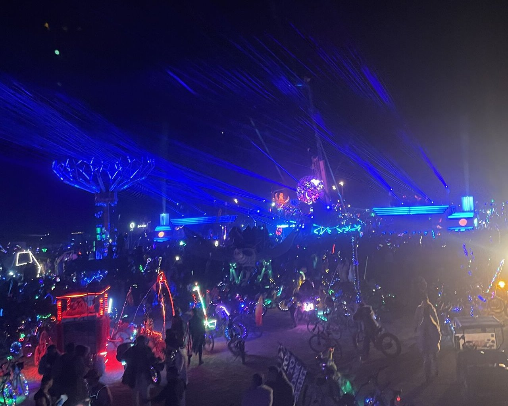Mijn benen zijn doodop van het slenteren over de playa maar bij terugkomst staat toevallig onze art car "Hels diner" net op het punt van vertrekken. Met ons hele kamp springen we op de wagen, ditmaal beleven we het terrein vanaf boven. Mensen dragen kostuums, maar ook versieren ze zichzelf en hun fietsen met verlichting in alle kleuren. Dat maakt het uitzicht van boven op de art car prachtig. Overal waar je maar kan kijken is het een waar kleurenfestijn.
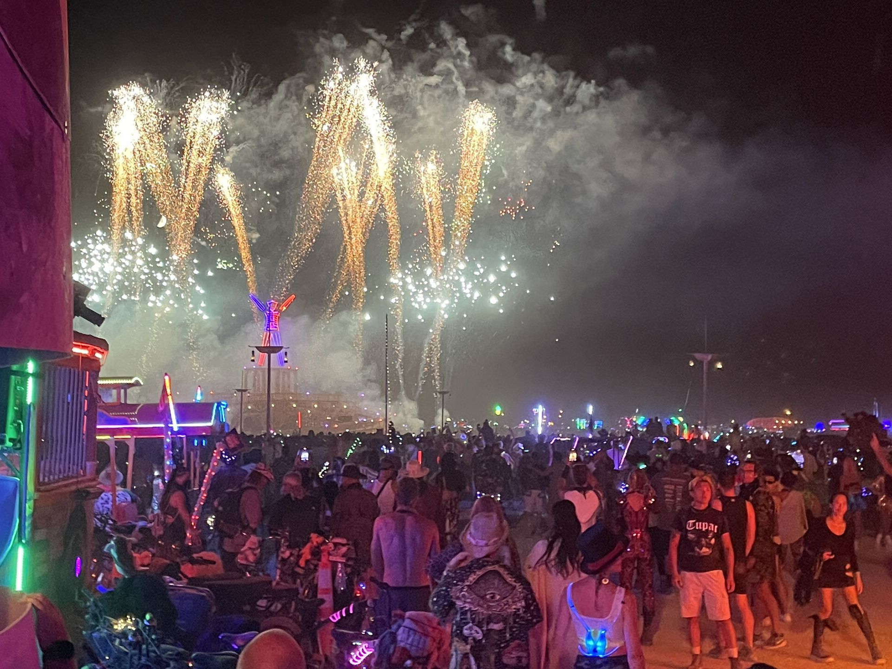Er lijkt geen einde te komen aan de onvergetelijke dagen die voorbij razen, tot ik plotseling iemand met zijn koffer het terrein zie verlaten. Opeens komt dat realisatiemoment dat we hier niet permanent leven. Hoe kom ik weer terug in Reno? Hoe ga ik mijn reis vervolgen? Op zaterdag wordt de grote houten man in het middelpunt van het terrein verbrand en is het groot feest en op zondag wordt de tempel in brand gestoken, uiteraard in doodse stilte. Omdat ik liftend op Burning Man ben gekomen, begin ik alvast maar eens rond te vragen of iemand toevallig nog een plekje vrij heeft om mij mee te nemen. De onzekerheid dat ik wellicht al vandaag moet vertrekken maar misschien ook pas over 2 dagen zorgt voor de nodige zorgen. Iemand uit ons kamp biedt me een rit aan, we vertrekken zondagochtend, de dag na het branden van de man. Nog een laatste maal laadt de hele stad zich op voor een enorm feest. Alle artcars, rond de 200, positioneren zich in een cirkel om de man. En dan als het donker wordt begint het vuurwerk en wordt de man in brand gestoken. De show is onbeschrijfelijk mooi, hoe is het mogelijk zoiets midden in de woestijn? Geen regie of iemand die het aankondigt, de hele show en het vuur beginnen vanzelf.
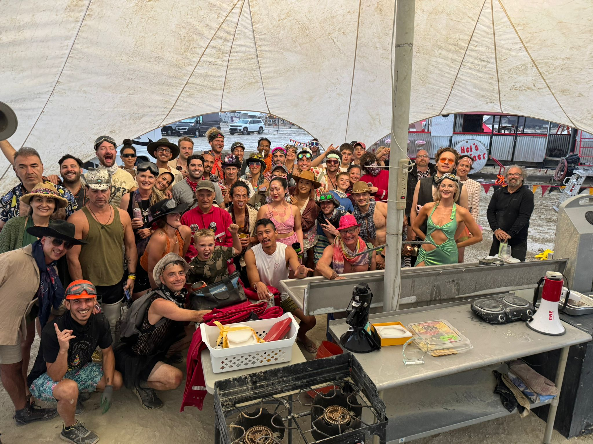De volgende ochtend om 7.00 klopt de jongen met wie ik mee kan rijden op mijn tent en zegt, "Woody”, zoals mijn Burning man naam was, “we moeten gaan!” Ik begin met inpakken en een half uur later zegt hij. "Sorry man je hebt minstens nog een uur nodig om in te pakken, ik moet ervandoor, tot ziens!" Ik sta daar in mijn uppie met al mijn spullen al buiten mijn tent, en toch zegt iets in mij dat het goed gaat komen, want hier op Burning Man laten ze niemand achter. Ik loop een rondje over ons kamp en kom de Zwitserse jongen Remi tegen die met zijn vriendin en haar zus op Burning Man is. Hij zegt dat hij misschien nog wel een plekje heeft. Het zijn zulke vriendelijke sympathieke mensen en ook al vertrekken ze voor de verbranding van de tempel, ik twijfel geen seconde en kijk super erg uit om met zijn vieren de tocht te maken terug naar Reno.
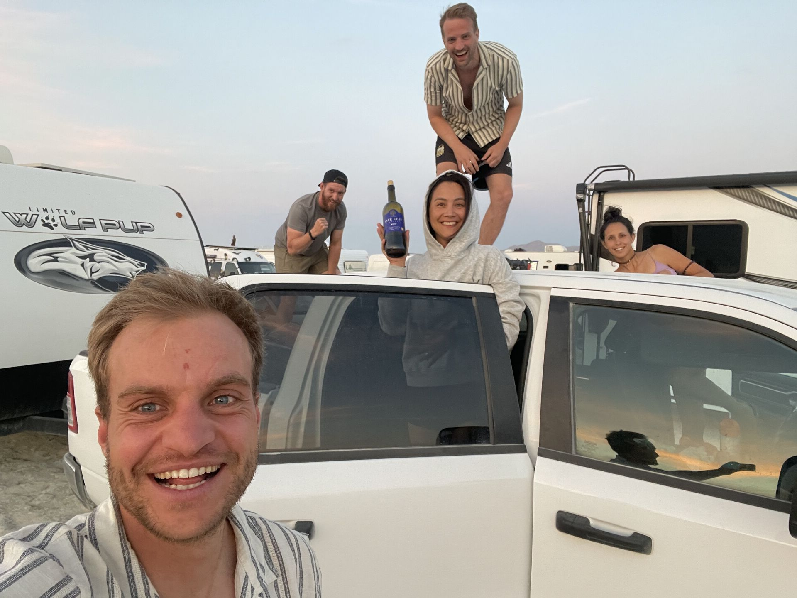We helpen mee met het afbreken van ons kamp en nemen afscheid van de groep. De Zwitsers zijn super inspirerende mensen. We praten uren na over hoe we het kamp hebben ervaren en ook Burning man als geheel. Ze vertelden ook over hun leven als arts in Zwitserland, hun avonturen in New York, waar het soms pittig was om te aarden en een paar interessante verhalen zoals over peniciline dat per toeval was ontdekt door een verstrooide professor en dat geel in de ogen kan wijzen op problemen met de lever. Ze hadden ook veel belangstelling voor mijn verhaal. Ik vertelde ze over de 3 jaar die ik had doorgebracht in Latijns Amerika, het grote contrast tussen de prachtige plekken die ik mocht bezoeken en de uitdagingen om mezelf thuis te voelen. In de file, bij het verlaten van de woestijn, zagen we zelfs in de verte nog de tempel branden. Alle mensen schoten op het dak van hun auto, terwijl een groepje burners direct hun instrumenten erbij tevoorschijn haalden. Want voor burners is er altijd reden voor een feestje. We parkeerden de auto langs de kant van de weg en sliepen daar om de dag erna verder te rijden naar Reno. In Reno namen we afscheid van elkaar. Na het afscheid was ik weer alleen maar ik had zo erg genoten dat ik me helemaal niet alleen voelde, maar vooral heel dankbaar.
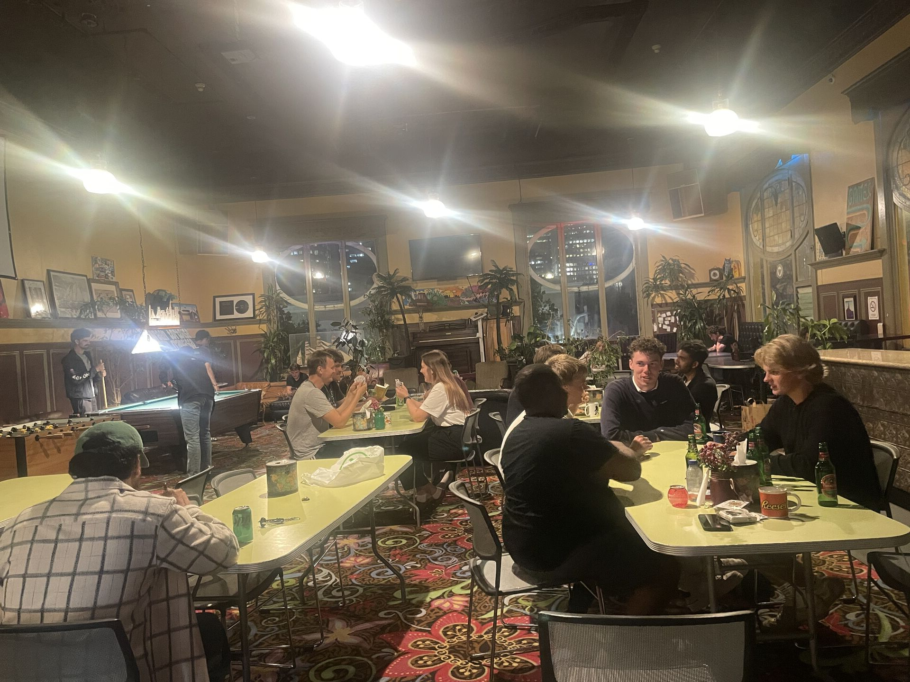Ik nam de Flixbus naar San Francisco. Op je hoogtepunt stoppen, zeggen ze weleens, en dat is ook wat ik ga doen met de expat experience. Ik heb jullie 3 jaar een kijkje gegeven in mijn leven. Ik heb dat met veel plezier gedaan, ook al was het best wat werk, en zat ik eigenlijk al te veel op de computer om het er nog naast te doen. Maar het gaf mij ook veel energie. Het was leuk om alle gebeurtenissen van een paar maanden steeds beknopt op te schrijven. Ik vond het fijn om zo ook contact te houden met veel mensen. Maar nu merk ik dat er een nieuwe fase aan komt en dat ik het een goed moment vind om te stoppen met het schrijven van de blogs. Dat betekent jammer genoeg dat dit de laatste blog zal zijn.
 De laatste vier dagen voor vertrek uit Amerika was ik in San Francisco. In deze prachtige stad kon ik de mooie jaren die ik heb gehad, afsluiten. Het valt op hoe goed alles geregeld is, en opnieuw zie ik de meest prachtige gebouwen. Ambulances en brandweerauto's in oude stijl. En natuurlijk mocht een bezoek aan de Golden Gate Bridge niet ontbreken. Ik had zo'n leuk hostel genaamd Green Turtles, waar ik met zoveel mensen nog gepraat heb, dat er nauwelijks tijd was om na te denken over een nieuwe tijd die komen gaat. Al 3 jaar hoop ik eens echt die digital nomads tegen te komen uit mijn eigen programmeerveld. En in dit hostel doet bijna iedereen iets met technologie, of ja tech is de hippe term. San Francisco is de technologie hoofdstad van de wereld met hoofdkantoren van Google, Apple en Meta. Ik spreek met PhD'ers over drones, met software engineers en ai studenten. Iemand die voor Google werkt vertelt hoe hij met een busje wordt opgehaald om naar zijn werk te gaan. Ik leg hem mijn project uit en hij begrijpt precies wat ik vertel. Het is zo gaaf om die herkenning te hebben, om dezelfde taal te spreken. En dan is het tijd om afscheid te nemen. De dagen zijn voorbijgevlogen. Wat heb ik genoten van Amerika. Hopelijk mag ik nog eens terugkeren. Het heeft zo veel inspiratie gegeven. Ik kan alleen maar blij zijn met deze prachtige reis die ik heb mogen maken, de landen die ik gezien heb en de verschillende culturen die ik heb kunnen ervaren, de dieren die er leven, de landschappen en de mooie ontmoetingen met allerlei mensen. Allesbehalve een regulier leven, maar dat is ook waar ik van hou. Ontsnapt aan de handen van de kartels en soms ook te maken met eenzaamheid. Maar alle ervaringen, zelfs de uitdagingen, hebben dit tot een fantastisch geheel gemaakt. Ik wil jullie natuurlijk ontzettend bedanken voor het lezen van mijn avonturen. Als laatste zou ik graag mijn broer Nick nog willen bedanken voor het helpen met het opzetten van deze website en mijn lieve moeder Caroline wil ik bedanken voor de geweldige steun en het herzien van de blogs. Ik hoop dat ik jullie nog eens tegenkom en dat we er in levende lijve nog eens over kunnen napraten.
De laatste vier dagen voor vertrek uit Amerika was ik in San Francisco. In deze prachtige stad kon ik de mooie jaren die ik heb gehad, afsluiten. Het valt op hoe goed alles geregeld is, en opnieuw zie ik de meest prachtige gebouwen. Ambulances en brandweerauto's in oude stijl. En natuurlijk mocht een bezoek aan de Golden Gate Bridge niet ontbreken. Ik had zo'n leuk hostel genaamd Green Turtles, waar ik met zoveel mensen nog gepraat heb, dat er nauwelijks tijd was om na te denken over een nieuwe tijd die komen gaat. Al 3 jaar hoop ik eens echt die digital nomads tegen te komen uit mijn eigen programmeerveld. En in dit hostel doet bijna iedereen iets met technologie, of ja tech is de hippe term. San Francisco is de technologie hoofdstad van de wereld met hoofdkantoren van Google, Apple en Meta. Ik spreek met PhD'ers over drones, met software engineers en ai studenten. Iemand die voor Google werkt vertelt hoe hij met een busje wordt opgehaald om naar zijn werk te gaan. Ik leg hem mijn project uit en hij begrijpt precies wat ik vertel. Het is zo gaaf om die herkenning te hebben, om dezelfde taal te spreken. En dan is het tijd om afscheid te nemen. De dagen zijn voorbijgevlogen. Wat heb ik genoten van Amerika. Hopelijk mag ik nog eens terugkeren. Het heeft zo veel inspiratie gegeven. Ik kan alleen maar blij zijn met deze prachtige reis die ik heb mogen maken, de landen die ik gezien heb en de verschillende culturen die ik heb kunnen ervaren, de dieren die er leven, de landschappen en de mooie ontmoetingen met allerlei mensen. Allesbehalve een regulier leven, maar dat is ook waar ik van hou. Ontsnapt aan de handen van de kartels en soms ook te maken met eenzaamheid. Maar alle ervaringen, zelfs de uitdagingen, hebben dit tot een fantastisch geheel gemaakt. Ik wil jullie natuurlijk ontzettend bedanken voor het lezen van mijn avonturen. Als laatste zou ik graag mijn broer Nick nog willen bedanken voor het helpen met het opzetten van deze website en mijn lieve moeder Caroline wil ik bedanken voor de geweldige steun en het herzien van de blogs. Ik hoop dat ik jullie nog eens tegenkom en dat we er in levende lijve nog eens over kunnen napraten.